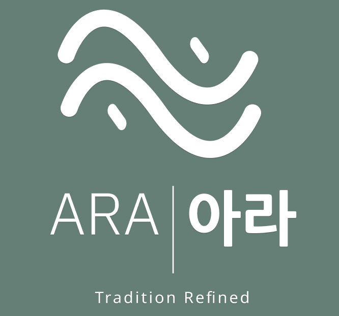
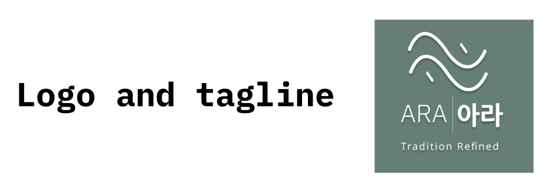
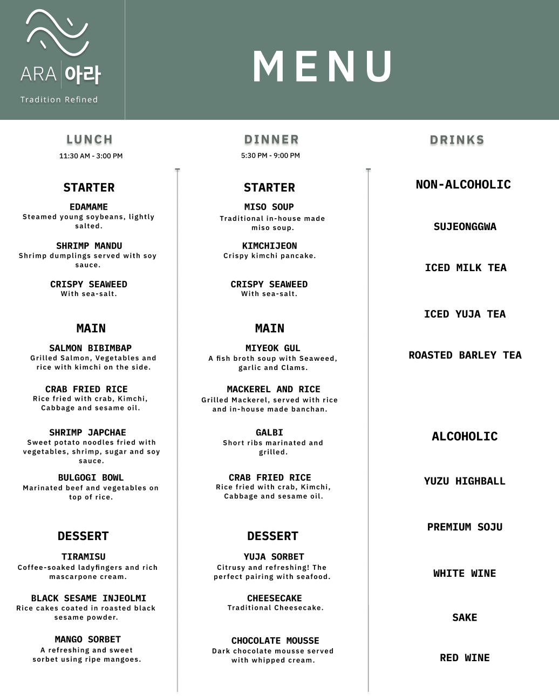
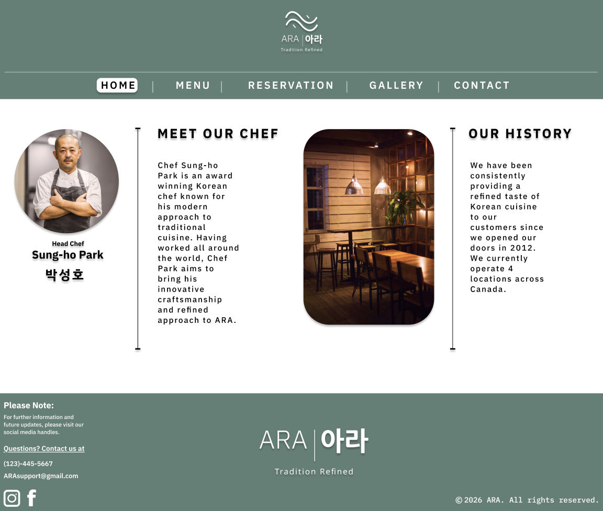
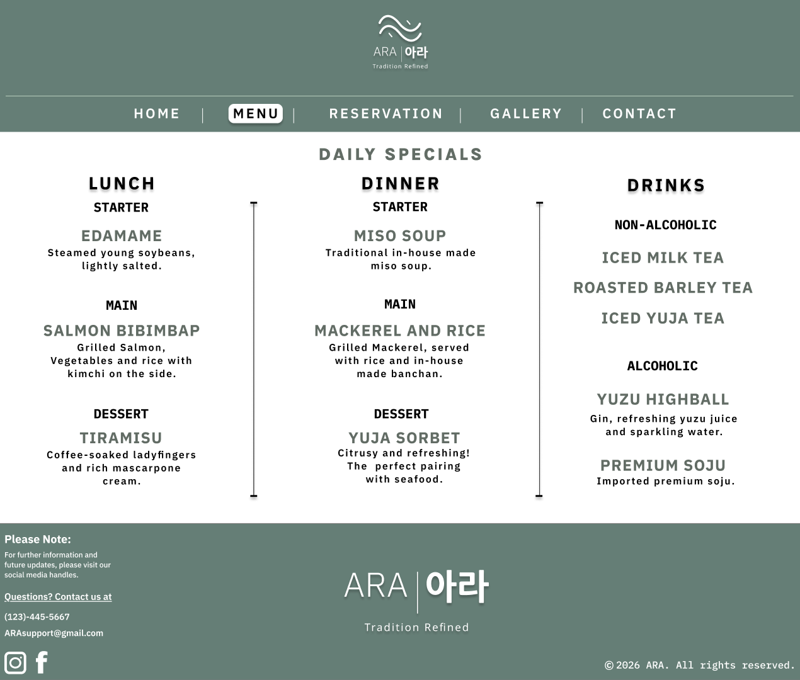
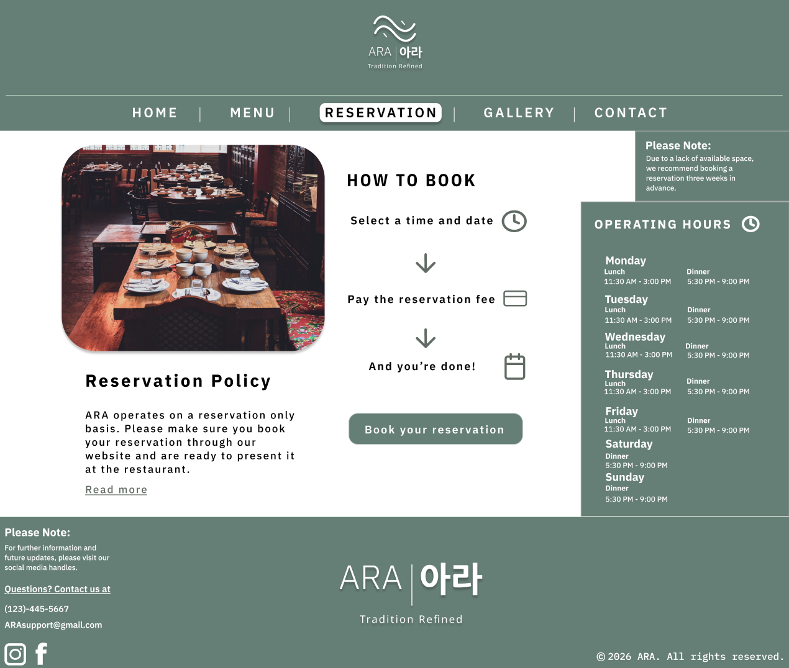
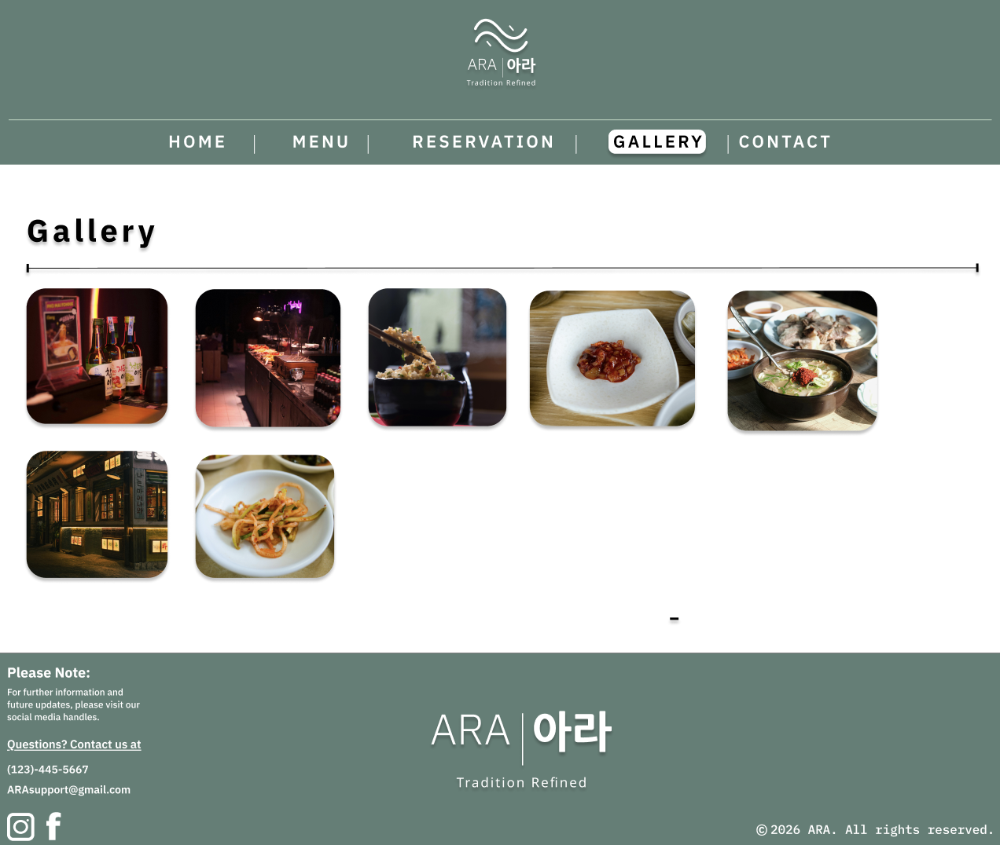
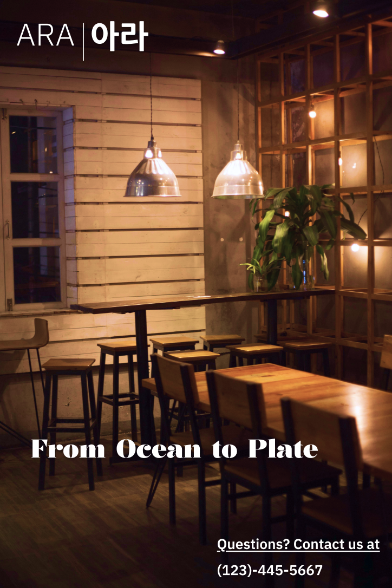
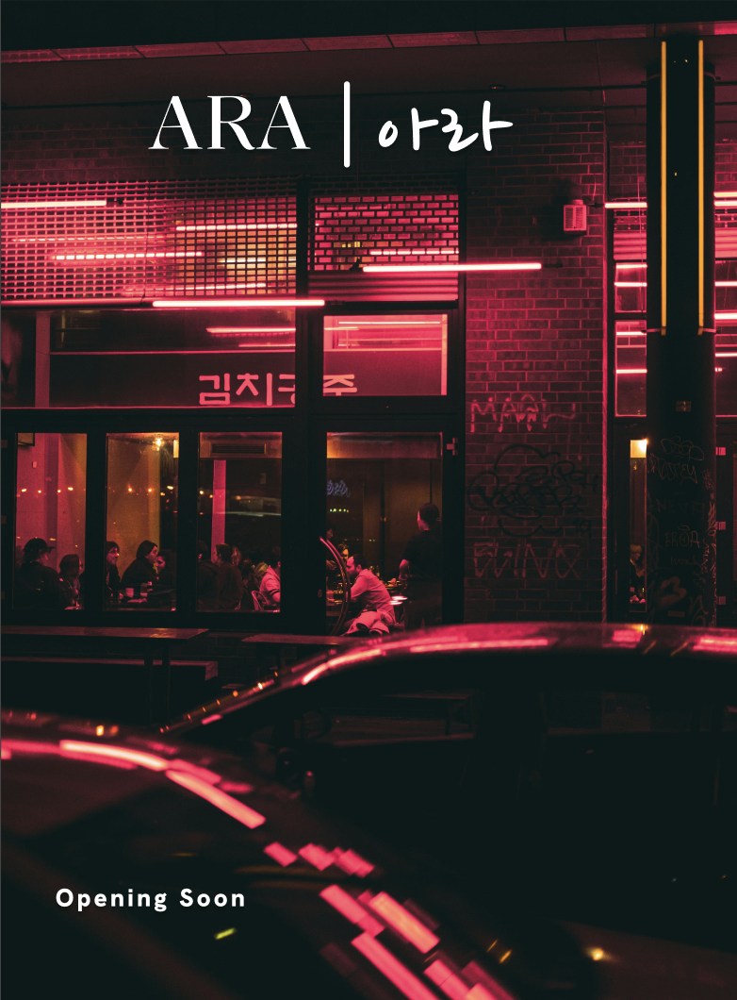
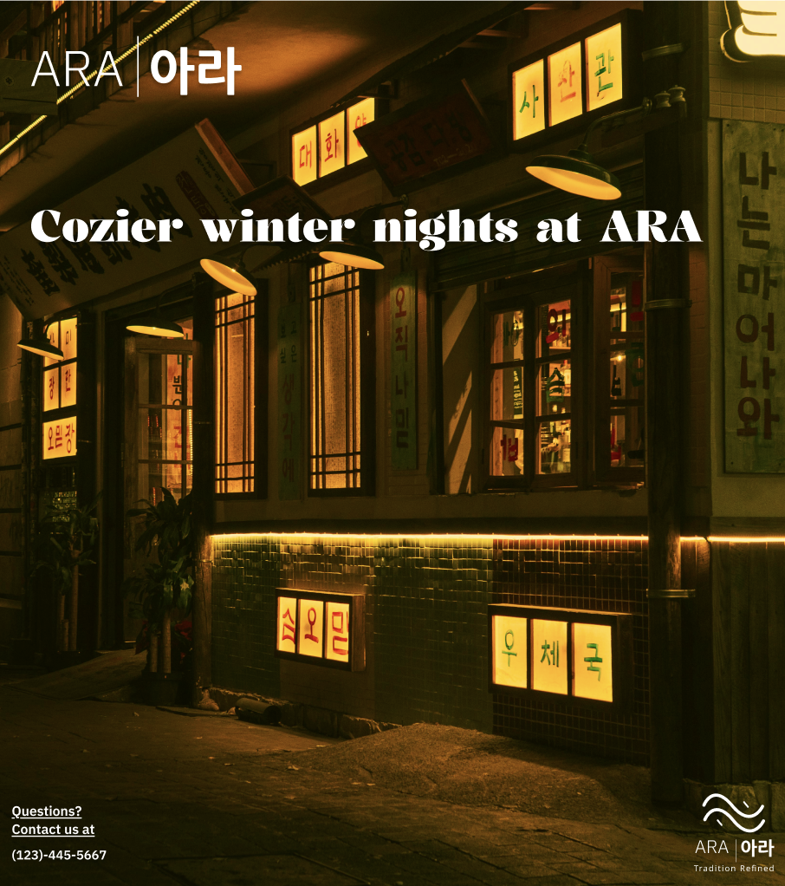

"ARA" Restaurant Concept
A concept and branding package for a high-end Korean restaurant.

Logo & Tagline
The Restaurant's logo was inspired by the ocean. The tagline "Tradition Redefined" shows that the restaurant commits to a traditional style of cuisine, but with a modern twist.

Menu
Because the restaurant is high-end, the menu does not show the usual appetizers or main courses that one can order a la carte; the menu shows a lunch menu, dinner menu, and drinks.

Restaurant Website
The website consists of home, menu, reservation, and gallery pages. Through the website, customers are able to check what ARA is serving on the day, and reserve a table as well as see the brand's history and photos of food taken by the restaurant.

Home page. Users can learn about the restaurant's history, and about the head chef.

Menu page. The page refreshes daily with the day's special menu.

Reservation page. Users can reserve their table at ARA using this page.

Gallery page. Users can click on the images to see what the meals look like at ARA.
Social Media Posts
In order to advertise the restaurant, social media posts would be used Photos would be the restaurant's ambience, with contrasting text.



Brand Style Guide
ColourHex #606D64 for text
Hex #5F7F76 for banners
Hex #BFDBC5 for borders
Fonts
IBM Plex Sans - Website headings and paragraphs
IBM Plex Mono - Menu headings
NanumGothic - Korean name
Nanum Pen - Korean stylized
Hannari - Tagline
Kalnia - English stylized
Overview
A modern high-end Korean restaurant with a minimalist aesthetic and a slight focus towards seafood. “ARA” roughly translates to “sea”.
Logo Usage
The wave motif and tagline can be dropped from the logo for aesthetic purposes, The name must always be in both English and Korean.